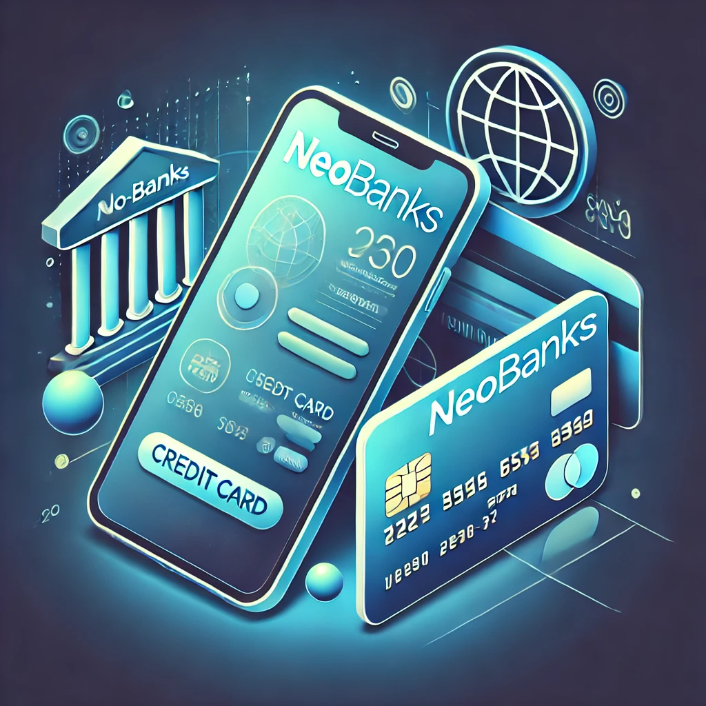

Neobancos
Los neobancos son instituciones financieras completamente digitales que ofrecen servicios bancarios a través de aplicaciones móviles y plataformas en línea, sin la necesidad de sucursales físicas.
Ventajas de los Neobancos
- Bajos costos operativos
- Acceso 24/7
- Interfaz amigable
- Mayor transparencia en tarifas